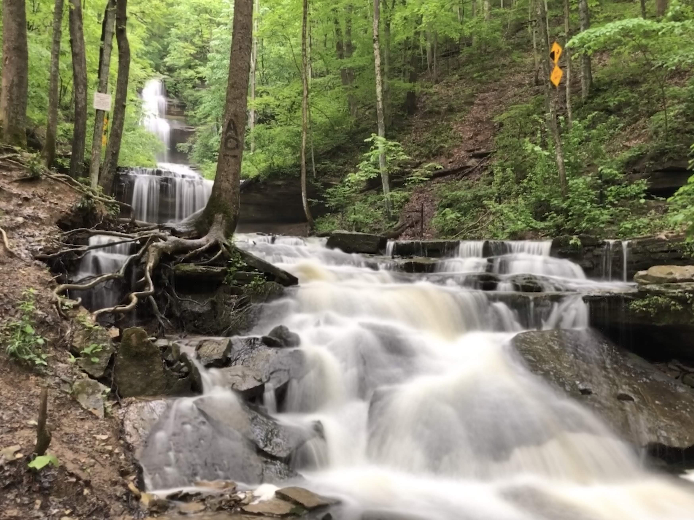
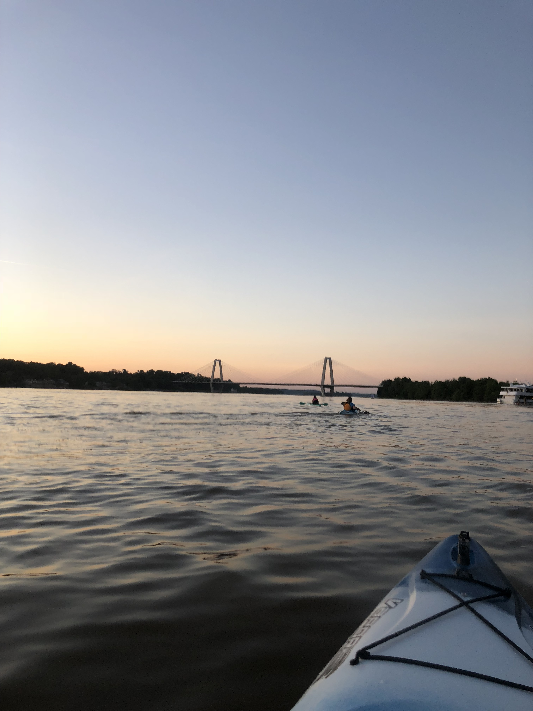

The Rolling Ramblers

Journey to the Bus
Now, this is a story all about how, my life got flipped-turned upside down, and I'd like to take a minute, just sit right there, I'll tell you how I became the prince of a town called Ram Bler!
Trails
GRRRR Casey is not the most patient human on Planet Earth. While she recognizes that some may call patience a virtue, her desire to understand how and why everything works drives her to madness
Creature Sightings
The Vapor 12 ft Angler is your kayak. At 12 feet, the Vapor 12 Angler offers an efficient ride without sacrificing comfort or stability. The open cockpit means room to store your gear both in front of you or in the day well behind you. An innovative dash board also provides storage for smaller items. Just add bait, a fishing rod, a PFD and a paddle and youre ready for a great day on the water.